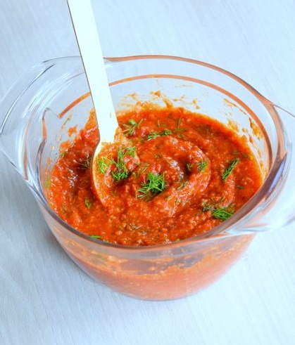
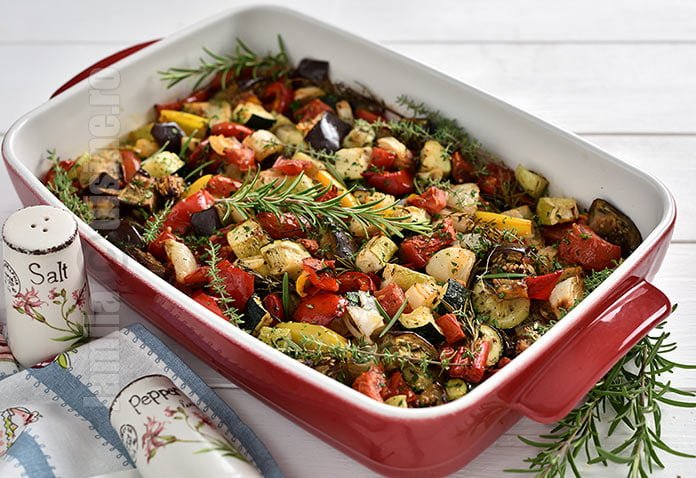

Pui cu legume la cuptor
Cred că pieptul de pui este carnea preferată de multă lume, nu doar la noi, ci la nivel mondial. Mai ales fileurile fără piele și os.
Eu prefer pulpele și aripile.
Aș zice că, în aceeași măsură, pieptul de pui este și cea mai maltratată carne din lume, de puține ori fiind gătită corect.
Ingrediente
- 3 jumătăți de piept de pui dezosat, fără piele, a câte 250g fiecare
Condiment de casă
- 1 linguriță sare
- 1/2 linguriță piper negru măcinat
- 2 lingurițe boia de ardei dulce
- 2 lingurițe usturoi granulat
- 1 linguriță oregano uscat
- 1 linguriță busuioc uscat
- 1 linguriță chimen semințe
- 1 linguriță zahăr brun
Marinadă
- 350 ml iaurt gras sau lapte bătut
- 1/2 din condimentul de casă de mai sus
- 1/2 linguriță sare
- 2 linguri TABASCO Chipotle sos ardei roșu
- 1 linguriță usturoi granulat sau 2 căței de usturoi zdrobiți
În plus
- puțin ulei
- verdeață tocată
Garnituri la alegere
- cartofi copți
- legume la cuptor
- mujdei cu roșii
- sos de iaurt cu usturoi
- orez fiert
Mod de preparare
- Mi-am pregătit ingredientele: pieptul de pui, iaurtul, mixul de condimente de casă și TABASCO Chipotle sos ardei roșu.
- Mixul de condimente l-am făcut foarte ușor prin amestecarea tuturor elementelor menționate la paragaraful corespunzător din caseta de ingrediente.
-
Am amestecat iaurtul cu 1/2 din mixul de condimente.
Am adăugat în plus niște sare, usturoi granulat și 2 linguri bune de TABASCO® Chipotle sos ardei roșu.
- Am amestecat totul bine și marinada de iaurt este gata!
-
Am ales un container de plastic potrivit în care am pus cele 3 fileuri de piept de pui și le-am acoperit (îmbăiat) cu marinada aromată de iaurt.
Iaurtul trebuie să acopere bine carnea.
- Am acoprit cutia cu un capac și am dat-o la frigider pentru măcar 12 ore. Puteți marina pieptul de pui și 24 de ore, fără probleme.
- A doua zi am scos cutia cu carne de la frigider cu 3-4 ore înainte de gătirea puiului. Carnea trebuie să se încălzească încet și să ajungă la temperatura camerei.
- Am uns bine de tot pieptul de pui cu ulei de măsline. L-am mai întors de pe o parte pe alta. Se va vedea cum uleiul este absorbit încet de carnea slabă de pui.
- Am pus cuptorul la încins la 230 C cu ventilație. Am ales o tavă încăpătoare și am așternut-o cu hârtie de copt.
- Am setat cronometrul la 20 de minute la 230 C și cam asta a fost. Pieptul de pui nu trebuie întors în timpul coacerii.
Mujdei picant cu roșii și usturoi
Am făcut un mujdei din roșii cu usturoi.
Am ras roșia și usturoiul pe răzătoare cu ochiuri mici și le-am amestecat cu sare, TABASCO Chipotle sos ardei roșu și puțin ulei.

Legume la cuptor
Punem toate legumele intr-o tavă din ceramică, le condimentăm și le dăm la cuptor timp de o oră la o temperatură ridicată pentru a se rumeni.
